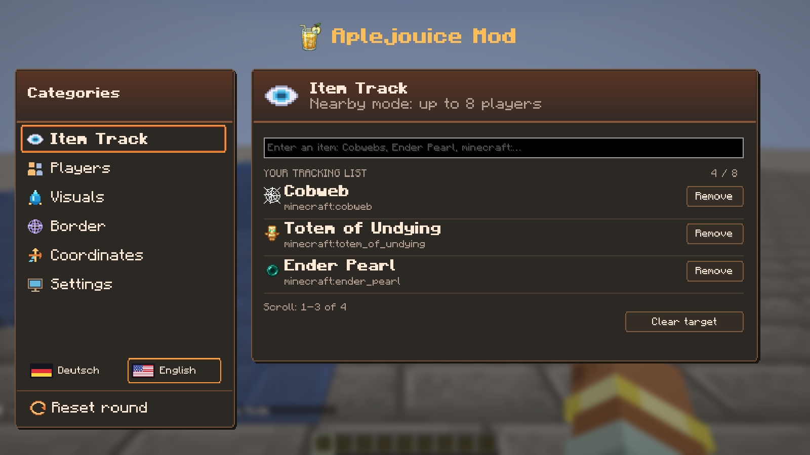

Your watchlist.
Search by item name or ID and add up to eight items. Webs, totems, ender pearls and end crystals are supported.
Up to 8 item typesWebs, totems, ender pearls and end crystals: the Aplejouice Mod shows observed usage counters above players.
Press J to open · German & English · Open Source

SMALL MOD. CLEAR FOCUS.
Your items, your opponent, your display.
Choose exactly what you want to see in a fight.
Search by item name or ID and add up to eight items. Webs, totems, ender pearls and end crystals are supported.
Up to 8 item types
Select a loaded player from the list or attack them. Opponent mode tracks only your selected target.
Select or attack
Watch nearby players or focus on one opponent. Choose whether to show zero counts and set your display range.
Up to 8 nearby players · max. 64 mTRY IT OUT
Use an item, see the counter change. Click an item to try the display in this website demo.
Illustrative demo. In-game counters depend on the server events your client receives.
How accurate is the tracking? ↗Track up to eight item types: webs, totems, ender pearls and crystals. Observed uses appear directly above the player.
TRY COORDINATES
Website demo with example values. Negative coordinates are rounded down correctly.
HUGO SMP DUEL END BORDER
Three measured arenas. Pick your preview.

Plains
Y 37 — 54
In-game map images. The border visually approximates the measured points.
THE DETAILS MATTER
On your first in-game launch, a compact card shows your current menu keybind with a waving skin. It stays until you open the mod and can be replayed in Settings.
Tutorial in Settings ↗At startup, the mod checks in the background for a new compatible version. You choose when to download it. No automatic installation.
View the latest version ↗READY FOR THE NEXT ROUND?
For Minecraft Java 1.21.11.
Requires Fabric Loader ≥ 0.18.4, Fabric API and Java 21.
Find the current version on our download page.
Install Fabric Loader ↗ for 1.21.11 and the matching Fabric API ↗.
Put the Aplejouice mod JAR together with Fabric API in your game instance’s modsfolder.
Enable tracking in the menu and add items. In opponent mode, also select a player.
GOOD TO KNOW
The mod records what your client receives from the server. Totem pops and pearls use server events. For webs and crystals, ownership is inferred from held items, reach and view direction. Ambiguous uses may be missed. The counters are not guaranteed complete server statistics.
Not for client-side observation. Optionally, the same JAR on a Fabric server can send vanilla ITEM_USED statistics to compatible clients.
Yes. Settings and your item list are saved across server changes and restarts. Targets and round counters reset when changing servers; select a new player in opponent mode.
Currently Minecraft Java 1.21.11 with Fabric. Newer versions need a separate update and are not automatically compatible. You can rebind J in Minecraft’s controls.
Yes, under the MIT license. Browse the code and report issues on GitHub. Much of the code, UI text and pixel icons was created with OpenAI Codex. The mod does not use AI at runtime.